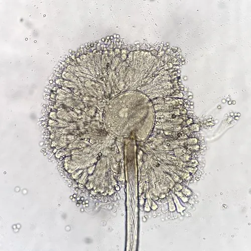

真菌 · 真菌界
黑曲霉 Aspergillus niger

黑曲霉的菌落呈黑色，能分泌大量酶类，是生产柠檬酸和酶制剂的重要工业菌，也会污染食物产生毒素。
- 分类
- 门子囊菌门纲散囊菌纲目散囊菌目科曲霉科属曲霉属
- 栖息环境
- 土壤、粮食、水果与腐败食品，温暖潮湿环境易繁殖
- 地理分布
- 世界性分布，常见于温暖潮湿地区
- 保护级别
- 暂无评估（工业微生物）
物种志
黑曲霉是子囊菌门曲霉科的真菌，菌丝有隔膜，分生孢子梗直立，顶端膨大形成顶囊，上面着生许多瓶梗和链状分生孢子，孢子呈黑色，使菌落整体呈黑色或深褐色。它生长迅速，在含糖、含淀粉的基质上容易大量繁殖，是常见的霉菌。
黑曲霉在自然界广泛分布，常见于土壤、粮食、水果和腐败食品上。它是重要的工业微生物：能大量分泌淀粉酶、蛋白酶、果胶酶和柠檬酸，被用于食品加工、酿酒制曲和生产柠檬酸；还可用于生物转化和生产饲料酶。但黑曲霉也会污染粮食和食品，部分菌株可产生赭曲霉毒素，因此食品和饲料的防霉很重要。黑曲霉对研究真菌代谢和工业发酵有重要意义。
形态与习性
- 菌落黑色或深褐色
- 分生孢子链状，黑色
- 产酶淀粉酶、蛋白酶、果胶酶
- 工业用途生产柠檬酸与酶制剂
- 危害污染食品，部分菌株产毒素
- 生境土壤、粮食与腐败食品
趣味知识
- 黑曲霉的孢子是黑色的，长出的菌落也呈黑色。
- 它能大量生产柠檬酸和多种酶，是重要的工业发酵菌。
- 黑曲霉也会让粮食和食品长霉，部分菌株还会产生毒素。